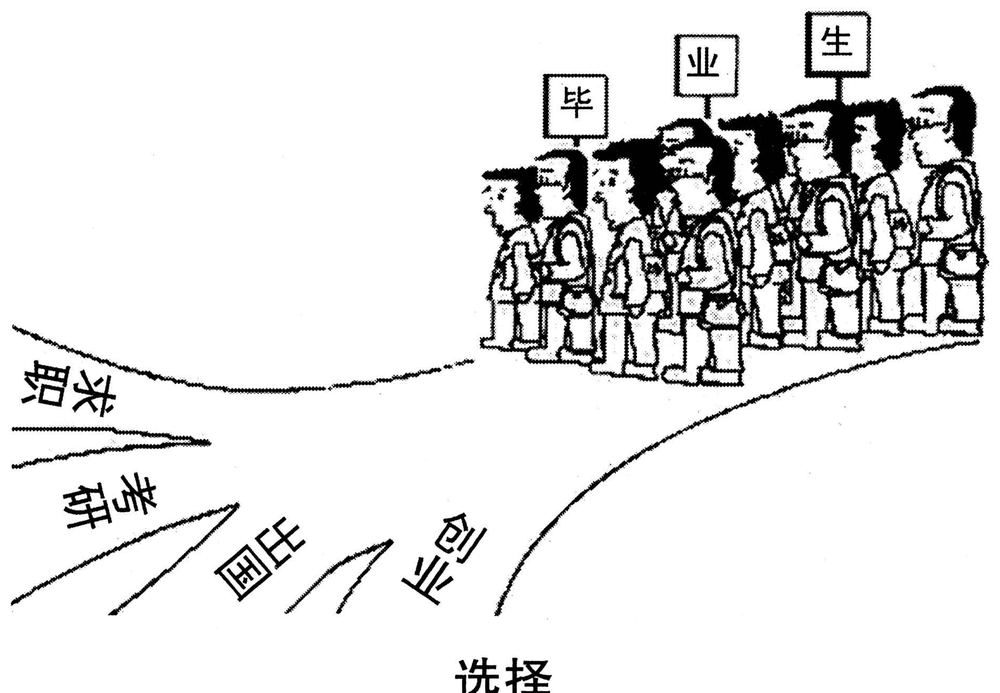

A小作文 · 邀请本校外教担任英语演讲比赛评委的邮件（10 分）
Write an e-mail of about 100 words to a foreign teacher in your college, inviting him/her to be a judge for the upcoming English speech contest.
You should include the details you think necessary.
You should write neatly on the ANSWER SHEET.
Do not sign your own name at the end of the e-mail. Use “Li Ming” instead.
Do not write the address. (10 points)
💭 审题三件事
- ⭐⭐ 请的是评委，不是嘉宾。嘉宾来了坐着就行；评委来了要干活——要听几个人、听多久、按什么打分、分数表什么时候拿到。⟹ 一位老师读完信要回答两个问题：① 我能去吗？（哪天、几点、在哪、占多久）② 去了做什么？（几位选手、每人几分钟、按什么评）。两个问题有一个答不上来，这封邀请就没法答应——这就是 details you think necessary 的判据。
- ⭐ 为什么请你？答案要从「校内」找。读者是 a foreign teacher in your college——他/她认识我们、给我们上过课。所以「为什么是你」不必堆 distinguished achievements（那是写给陌生教授的，2022），一句共同经历就够：你的口语课让我们知道什么样的演讲才有说服力。反过来，校内的人不需要的细节一个也别写：学校在哪、怎么来、住哪儿。
- 学生请老师，语域往上抬半格。用 I am writing to invite you to … / Could you let us know …? / We would be honoured …；不写 Please be our judge.（命令）· I hope you can come.（can 问的是能力）。最后给一个答复日期——比赛是 upcoming 的，没有答复期限，组织者就没法排评委名单。
⭐⭐ 基础版七年 Part A 七种体裁（第七年仍不重样 · 但与 2022 撞了体裁）
| 年份 | 体裁 | 读者是谁 | 第一句怎么起 | 落款 | 本年特有的坑 |
|---|---|---|---|---|---|
| 2007 | 建议信 | 校图书馆（机构） | I am writing to put forward several suggestions … | Li Ming | 建议只有口号没有可执行动作；写成投诉信 |
| 2008 | 道歉信 | 具名熟人 Bob | I am writing to apologize for … | Li Ming | 只道歉不给方案；方案没有「动作＋方式＋时间」 |
| 2009 | 致编辑信 | 报社编辑 | I am writing to express my concern about … | Li Ming | 建议里没有一条是编辑自己能办的 |
| 2010 | 通知 NOTICE | 一群人（无称呼） | Volunteers are needed for … | 机构名 | 写 Dear ＝ 体裁错；落款签 Li Ming |
| 2011 | 推荐信 | 未具名的朋友 （名字自己起） | How have you been? I am writing to recommend … | Li Ming | 写成影评／剧透结局；通篇只有「我」没有「你」 |
| 2012 | 欢迎邮件 （以组织名义） | 一群人（国际学生） 但仍是书信 | On behalf of the Students’ Union, I would like to extend a warm welcome to … | Li Ming ＋ Students’ Union | 按 2010 的手感写成通知；通篇 I 没有 we；Welcome you to … |
| 2013 本题 | 邀请邮件 （请人担任角色） | 本校外教（给身份、不给名字、不给性别） | As chair of the English Club, I am writing to invite you to serve as a judge for … | Li Ming | ⭐ 只邀请、不交代工作量；Dear foreign teacher；没给答复期限；judger；Please be our judge. |
- ⭐ 2012 页定的四问：① 体裁词（e-mail ⟹ 有 Dear）② 读者是谁（一位外教，没名字 ⟹ 自己起姓配 Mr./Ms.）③ 以谁的名义——本年题干没说 ⟹ 不是「随便」，是「由你补一个合理身份」：一个普通学生凭什么邀请老师当评委？写明 As chair of the English Club，这封信才站得住；④ Do not sign ⟹ Li Ming。
- ⭐⭐ 「同题型连续七年不重样」三条线在基础版里同时续满：翻译七年七种丢分机制（2013 修辞）· 完形七年七种考点分布（2013 搭配最多）· Part A 七年七种体裁（2013 邀请邮件）。⟹ 不押考法，只把每一种打法练熟。
- ⚠️ 但把 2022 放进来，邀请信出现了第二次——这不推翻上一条，反而说明「同体裁不同打法」：请人来组队参赛和请人来当评委，要写的细节几乎没有交集。
⭐⭐ 同是邀请邮件：2022 请教授组队 vs 2013 请外教当评委（本页新增）
体裁名词决定格式，读者与角色决定内容。同一种信，把这两栏的细节对调着写，两年都会掉档。
| 对照项 | 2022 · 请英国大学教授组队参赛 | 2013 · 请本校外教当演讲比赛评委 |
|---|---|---|
| 读者与我们的关系 | 校外、陌生、身份高 | 校内、认识（给我们上过课） |
| 请他/她来做什么 | 带一支队伍来参加 | 坐在台下打分——要干活 |
| 「为什么是你」 | 对方的学术成就（陌生人只能看履历） | 一句共同经历：你的口语课 |
| ⭐ 必须补的细节 | 比赛是什么 · 何时何地 · 队伍规模 · 食宿安排 | 何时何地（几点到几点）· 几位选手、每人几分钟 · 按什么评分 · 材料何时送到 · 答复期限 |
| 不必写 | — | 学校介绍、交通、住宿（人就在本校）；比赛意义大段、奖品设置 |
| Directions 怎么交代要点 | 只有 inviting … to organize a team（细节是隐性要点） | inviting … to be a judge ＋ 明写 include the details you think necessary |
⚠️ Directions 限定词清算表（开考先圈出来）
本题九个限定词里有四个在管「细节」（to be a judge / the upcoming / include the details / necessary）；往年的限定词大多管格式（体裁、落款、字数），本年一半在管「写什么」。
| 限定词 | 它约束什么 | 违反的后果 |
|---|---|---|
| an e-mail … the end of the e-mail | 书信格式：称呼 ＋ 正文 ＋ 结尾敬语 ＋ 落款 | 写 Subject、日期、邮箱地址——不加分还占字数 |
| to a foreign teacher | 读者＝一位外籍老师，没给名字 ⟹ 自己起姓 ＋ Mr./Ms. | ❌ Dear foreign teacher（把人叫成身份标签，失礼）· ❌ Dear Teacher Wilson（中式称谓）· ❌ Dear Sir or Madam（写给机构才用） |
| in your college | 读者在校内 ⟹ 可以提共同经历，不必交代交通食宿 | 照搬 2022 的「我们承担您的住宿」＝没读这三个词 |
| inviting him/her | 性别未定 ⟹ 称呼里选定一个，全文代词一致；正文用 you 最省事 | Dear Ms. Wilson 开头，正文又写 he；或者 Dear Mr./Ms. Wilson 照抄斜杠 |
| to be a judge | 角色＝评委（要干活）⟹ 必须写工作量 ＋ 评分标准 | ❌ judger（词典里极罕见，比赛评委没人这么说）· 只说「请您来」不说「来做什么」 |
| the upcoming English speech contest | the ＝ 确有其事的一场比赛；upcoming ＝ 快到了 ⟹ 具体日期、将来时 | 写 some day / soon——没有日期的邀请没法答应 |
| include the details you think necessary | ⭐⭐ 开放式要点：对方决定去不去、到场怎么评需要的一切；necessary 同时是一把筛子 | 漏时间／地点／工作量（不够）；或写比赛意义、奖品、校史（不必要） |
| of about 100 words | 95–115 最稳 | 细节一多容易写到 140——每个细节压成一个短语 |
| Do not sign … Use “Li Ming” instead Do not write the address | 落款 Li Ming；不写地址 | 签真名有判零风险 |
🧩 细节怎么挑：对方要回答的两个问题 ＋ 两个收尾（本页新增）
2010 页的开放式要点判据是「读者不知道就没法行动」。本年读者的「行动」有两步——先决定答不答应，再到场打分——所以细节也分两组，最后补上「为什么是你」和「几号前回复」。
| 对方心里的问题 | 不写会怎样 | 压成一个短语 | 别写成 |
|---|---|---|---|
| ① 我能去吗？ | 没法看日程，只能回信追问 | to be held from 7 to 9 p.m. on December 14 in the library lecture hall （日期 ＋ 起止时间 ＋ 地点，一个不定式短语装完） | The contest will be held soon. |
| ② 去了做什么？ | 评委最怕「去了才知道要听三小时」 | Ten finalists will each give a five-minute speech, to be scored on content, language and delivery. （人数 × 时长 ＝ 工作量；三项 ＝ 评分标准） | You only need to listen and give scores.（说得轻巧，等于没说） |
| ③ 为什么是我？ | 邀请像群发 | Your oral English classes have shown many of us what makes a speech convincing … | You are an excellent teacher with rich experience.（空洞恭维） |
| ④ 我要准备什么？几号前回复？ | 答应之后心里没底；组织者等不到答复 | We will send you the scoring sheet and speaker list three days in advance. Could you let us know by December 7 …? | Please reply as soon as possible.（没有日期） |
- ⭐ 「细节」是给对方做决定用的，不是给自己凑字数用的。比赛的主题、奖项、历届盛况，评委做决定用不上——necessary 把它们筛掉了。
- ⭐ 日期写绝对日期，别写「下周五」：信是哪天发的阅卷人不知道，next Friday 指哪天说不清；December 14 / December 7 前后一对，还顺手留出了一周的答复时间。
✍️ 范文（ 词 · 🟡 亮点点击看讲解）
Dear Ms. Wilson,
身份 ＋ 邀请 ＋ 时地As chair of the English Club, I am writing to invite you to serve as a judge for the upcoming English Speech Contest, to be held from 7 to 9 p.m. on December 14 in the library lecture hall.
工作量 ＋ 理由 ＋ 材料Ten finalists will each give a five-minute speech, to be scored on content, language and delivery. Your oral English classes have shown many of us what makes a speech convincing, so your judgement would mean a great deal to the speakers. We will send you the scoring sheet and speaker list three days in advance.
答复期限 ＋ 期待Could you let us know by December 7 whether you are available? We would be honoured to have you on the panel.
Yours sincerely,
Li Ming
我是英语俱乐部主席，写信想邀请您担任即将举行的英语演讲比赛的评委。比赛定于 12 月 14 日晚 7 点至 9 点在图书馆报告厅举行。
决赛共有十位选手，每人演讲五分钟，按内容、语言和台风三项评分。您的口语课让我们很多人明白了怎样的演讲才有说服力，所以您的评判对选手们意义重大。评分表和选手名单我们会提前三天送到您手上。
能否请您在 12 月 7 日前告诉我们您是否有空？若能请您担任评委，我们将深感荣幸。
此致
李明
- ⭐⭐ 要点只邀请、不交代工作量：通篇「我们非常希望您能来」，却没说要听几个人、按什么打分。题干明写 include the details you think necessary——评委邀请信里最 necessary 的细节，恰恰就是「来了做什么」。
- ⭐ 称呼❌ Dear foreign teacher,（把人叫成身份标签）· ❌ Dear Teacher Wilson,（汉语「王老师」式称谓，英文不这么叫）· ❌ Dear Mr./Ms. Wilson,（把题干的斜杠抄进称呼）⟹ ✅ Dear Ms. Wilson, / Dear Mr. Wilson, / Dear Professor Wilson,（确知对方职称才用 Professor）。
- ⭐ 要点没有日期或没有答复期限：the contest will be held soon / please reply as soon as possible。题干说的是 the upcoming contest——快到了的事，更要写死日子。
- 语言❌ judger（词典里极罕见，比赛评委没人这么说）⟹ ✅ a judge / a member of the judging panel；❌ be held on the evening of December 14 from 7 to 9 p.m. 不算错但啰嗦，时间从小到大、从大到小选一种顺序。
- 语域❌ Please be our judge.（祈使句＝命令）· ❌ I hope you can come.（can 问的是「有没有能力来」）⟹ ✅ Could you let us know whether you are available? / We would be honoured if you could …
- 内容照搬 2022 的外校教授信：Given your distinguished achievements … / We will cover your accommodation。读者在本校——这两句一句空洞、一句多余。
- 内容细节写成比赛宣传稿：主题意义、奖项设置、往届盛况。necessary 是一把筛子，评委做决定用不上的一句也别写。
- 代词称呼选了 Ms.，正文却写 he／him；正文全程用 you，就不会出错。
- 字数about 100 词：95–115 最稳。本文 词（不含称呼与落款）。
- ⭐ 第一句一口气兑现三件事：身份（As chair of the English Club）＋ 要点动词（invite you to serve as a judge）＋ 题干原词 the upcoming。阅卷人扫描的是要点词，第一句就让它落地。
- ⭐⭐ 时间地点压成一个不定式短语：to be held from 7 to 9 p.m. on December 14 in the library lecture hall——起止时间顺手回答了「占我多久」，比只写 on December 14 多交代了一个评委最关心的数。
- ⭐⭐ 工作量用「人数 × 时长」表达：Ten finalists will each give a five-minute speech——each 让乘法一眼可算（约一小时发言），finalists 暗示前面已有初赛、今晚是水平最高的一场。
- 评分标准挂在逗号后面：, to be scored on content, language and delivery——不定式被动作后置补充，三个名词就是评分表的三栏，评委一读就知道自己要看什么。
- ⭐ 「为什么是你」只写一句，而且是校内才写得出的一句：Your oral English classes have shown many of us what makes a speech convincing——既是理由，又是恭维，还不空（它说的正是评委要判断的那件事）。
- 主动交代「我们会做什么」：We will send you the scoring sheet and speaker list three days in advance.——把对方答应的成本降下来：不用自己准备，材料会送到。
- ⭐ 请求答复用疑问句 ＋ 绝对日期：Could you let us know by December 7 whether you are available?——比 Please reply 客气，比 as soon as possible 可执行；available 给了对方体面的拒绝空间（没空而不是不愿意）。
- 末句 honoured ＋ on the panel：panel 是「评审团」，一个词把「评委」换了个说法，避免全文 judge 出现三次。honoured 与上一段的 judgement 都是英式拼写，全文统一一种。
- 落款两行：Yours sincerely, / Li Ming。本年没有 in the name of，就不必补机构名（对照 2012）——身份已经在第一句交代过了。
B大作文 · 图画作文（20 分）
Write an essay of 160–200 words based on the following drawing. In your essay, you should
1) describe the drawing briefly,
2) interpret its intended meaning, and
3) give your comments.
You should write neatly on the ANSWER SHEET. (20 points)

- 右上角，大约十个年轻人挤成一团，站在一条宽路的尽头，全都朝左、朝同一个方向。
- ⚠️ 他们几乎长得一模一样：同一种发型、同样的双肩包带和腰间小包，好几个戴着眼镜，挤得肩膀挨肩膀、分不清谁是谁——这是全图最反常的地方，见下一节。
- 人群头顶举着三块牌子，一块一个字：「毕」「业」「生」——一个身份，要三块牌子才拼得出来；它贴在整群人头上，不贴在任何一个人身上。
- 人群前方，路分成四条，向左下方散开，各写两个字：求职、考研、出国、创业。⚠️ 四条路没有一条被画成「此路不通」，也没有一条被画成「光明大道」——画家没给路排座次。
- ⚠️ 四条路上一个人都还没有——大家都还站在分岔之前，还没有人选。
- 图下方图注：「选择」——一个词，没有引号。
💭 审题：图注已经把主题说了，题眼在「谁来选」
- 图注只有一个词「选择」，四条路又把选项列得清清楚楚 ⟹ 主题送到手上：毕业＝岔路口。这一步谁都想得到，它只够三档。
- ⭐⭐ 再看最反常的地方：路分成了四条，人却长成了一个样。同一种发型、同一种背包、同一个朝向，连「毕业生」三个字都要三块牌子合起来举——画家把一个个人画成了「一群人」。⟹ 题眼不在「选哪条路」，而在「一群长得一样的人，怎么走进四条不一样的路」：一个班可以一起走一条路，却不可能一起走四条。
- ⭐ 再核对一个模板的前提：「人生岔路口，要慎重选对那条路」——它假定四条路里有一条是对的。回画面查：没有一条路被标成对或错，四条路也都还空着 ⟹ 画家不评判路，只把人群推到岔口前。⟹ 第二段三步：① 毕业是岔口 → ② 难处不在路（没排座次）→ ③ 难处在人群（默认跟着前面的人走）。
- 「毕业生」✅ graduates / new graduates / graduating students。⚠️⚠️ ❌ graduate students——在英文里是研究生！（正好是四条路里「考研」的终点）；❌ graduated students（中式）。
- 四条路写成同一种语法形式（全用动名词）：✅ job hunting · sitting the postgraduate exam（或 applying to graduate school） · going abroad · starting a business。❌ start a career（＝开始职业生涯，不是创业）· ❌ go to abroad（abroad 是副词，不加 to）· ❌ test for postgraduate。
- 「选择」✅ “Choice” / “Making a Choice”。Choices（复数）也不算错，但重心移到了「选项」上；单数 Choice 指「选择这个动作」，正好对着本图的题眼：谁来选、怎么选。
📐 描图段三看（换任何一年的图都能用 · 本图版）
| 看什么 | 本图看出来的 | 写进文章的哪一句 |
|---|---|---|
| ① 看图上的字 | 图注「选择」＋ 四条路牌（并列，一个都不能漏）＋ 头顶三块牌子「毕／业／生」 | beneath three placards that together read “graduates” … job hunting, sitting the postgraduate exam, going abroad and starting a business. The caption reads “Choice”. |
| ② 看最反常处 | ⭐⭐ 反常的不是路多，而是人一样：同一发型、同一背包、同一朝向、挤成一团；四条路还都空着 | They look almost identical: same haircut, same backpack, same direction. … four empty lanes |
| ③ 看动作方向 | 人群朝一个方向；路却朝四个方向散开 | A class can walk one road together; it cannot take four. |
- ⭐ 两人图先判两人关系（2012 页）；群像图先看人与人之间有没有差别。本图画家刻意抹掉了差别——这就是寓意的入口。写「一群毕业生站在路口」谁都写得出；写出「他们长得一模一样」，阅卷人立刻知道你真的看了图，而且第二段的论点（默认跟着前面的人走）已经埋好了。
- ⚠️ 「四条路都还空着」这一句别漏：它决定了全文的时态与语气——他们还没选，所以文章是建议怎么选，不是批评他们选错了。
🧩 图上字的语法结构，决定文章的论证结构（六型扩到七型：新增「一词图注 ＋ 并列标签」）
| 年份 | 图上的字是什么结构 | 文章就得怎么搭 |
|---|---|---|
| 2007 | 无字，只有两个想象气泡 | 靠对比两个气泡立意 |
| 2008 | 因果句：你一条腿，我一条腿；你我一起，走南闯北 | 顺着因果推。单线论证 |
| 2009 | 对举短语：网络的“近”与“远” | 两边都写，还要回答为什么同一个东西既近又远 |
| 2010 | 比喻式判断句：文化“火锅”：既美味又营养 | 先解喻，再分别落实两个并列谓语 |
| 2011 | 引号双关式短语：旅程之“余” | 破字 → 对照句 → 指认施动者 |
| 2012 | 两句对白：全完了！／幸好还剩点儿。 | 转述 → 拿画面核对真假 → 看手 |
| 2013 本题 | 一词图注 ＋ 并列标签：选择 ／ 求职·考研·出国·创业 ／ 毕·业·生 | ⭐ 三步走：① 标签全译（四个并列一个不漏，语法形式统一）；② ⭐⭐ 不给标签排座次——图没排，文章就不排；③ 追问图注那个词的主语：「选择」是谁在选、凭什么选 |
| 2022 | 对话：两名学生就要不要听讲座的两句话 | 转述两句对话并选边站 |
| 年份 | 现成联想 | 回画面查一遍 | 结论 |
|---|---|---|---|
| 2009 | 蛛网 ⟹ 陷阱 | 图里没有蜘蛛 | ❌ 联想错 |
| 2010 | 火锅 ⟹ 熔炉 | 每块料都还保留形状和名字 | ❌ 联想错 |
| 2011 | 河脏 ⟹ 工厂排污 | 图上没有工厂 | ❌ 联想错 |
| 2012 | 半杯水 ⟹ 乐观 vs 悲观 | 瓶里确实还剩、两人确实相反 | ✅ 成立，但少了那只手 |
| 2013 本题 | 岔路口 ⟹ 「慎重选择，选对那条路」 | 「选择很重要」成立；但「有一条是对的」——四条路一条也没被标出对错，四条都空着 | ⚠️ 半成立：主题对，隐含前提找不到；图上多出来的是一模一样的人群 |
- ⭐⭐ 规矩再补一句：查模板时，连它的隐含前提一起查。「选对路」这四个字里藏着一个判断——路有对错。画面不给这个判断，文章就不许替画面下（于是「考研比工作好」「创业风险太大」这类排座次的句子，全都是跑题）。
- ⭐ 五年连起来看，这把尺子量出了三种结果：错（2009–2011）· 成立但不够（2012）· 半成立（2013）。规矩的动作始终只有一个：回画面查。
✍️ 范文（ 词 · 🟡 亮点点击看讲解）
①描图As is vividly shown in the cartoon, about ten graduates stand packed together at the end of a road, beneath three placards that together read “graduates”. They look almost identical: same haircut, same backpack, same direction. Just ahead, the road splits into four empty lanes: job hunting, sitting the postgraduate exam, going abroad and starting a business. The caption reads “Choice”.
②寓意Graduation, the cartoon suggests, is less a finish line than a fork. Yet the difficulty lies not in the lanes, which the cartoonist never ranks, but in the crowd. Human nature being what it is, most people stick with default settings, and for these graduates the default is the person in front. A class can walk one road together; it cannot take four.
③评论In my view, the real danger is not choosing the wrong lane but choosing a lane for the wrong reason. Some students sit the postgraduate exam mainly because their roommates do; others go abroad because it sounds impressive. A simple test helps: would I still take this lane if no one else did? It takes three placards to spell out “graduates”; it takes one person to choose a road.
漫画似乎在说，毕业与其说是终点，不如说是岔口。然而难处不在路——画家从没给这四条路排过座次——而在人群。人性使然，大多数人守着默认设置不动；而对这些毕业生来说，默认设置就是站在前面的那个人。一个班可以一起走一条路，却不可能一起走四条。
在我看来，真正的危险不是选错了路，而是为了错的理由选路。有的学生考研，主要是因为室友在考；有的人出国，是因为说出去体面。一个简单的检验就够了：如果别人都不走这条路，我还会走吗？拼出「毕业生」要三块牌子；选一条路，只需要一个人。
🔁 一图三写：同一幅图，第三段的三个版本
前两段一个字不动，只换第三段——按 Directions 第 3 条的动词选版本。点一下卡片可以高亮对照。
- ⭐⭐ 立意给四条路排座次：Taking the postgraduate exam is the wisest choice … / Starting a business is too risky for graduates …。画面没排，文章就不许排——而且正在考研的你最容易写出这一句（考场上最自然的偏心）。
- ⭐ 立意写成就业形势分析：The job market is tough, so more and more graduates … 。图的主角是站在岔口的人，不是岔口外的经济；把原因推给市场，就把「谁来选」这个问题推掉了。
- ⭐ 描图漏掉「人一模一样」，只写 a group of graduates are facing four roads。这是全图最反常的地方，也是第二段唯一的证据——漏了它，寓意就只剩「选择很重要」这一档。
- 要点四个路牌漏译一两个，或写成 looking for jobs, postgraduate, abroad, start business（词性乱）。并列成分几个译几个，语法形式要统一。
- 语言❌ graduate students（＝研究生）· ❌ crossroad（单数形式不存在，是 a crossroads；本图其实是 a fork in the road）· ❌ start a career（≠ 创业）。
- 语气骂毕业生盲目、没主见：Today’s graduates are blind followers …。四条路都还空着——他们还没选，文章是给建议，不是下判决。
- 要点第三段只有口号：We should make a wise choice according to our own situation。要给一个能照做的东西——一个检验问题（would I still take this lane if no one else did?）或三个问题。
- 字数160–200：190–198 最稳。本文 词。
- ⭐ 「三块牌子合起来是毕业生」进描图段：beneath three placards that together read “graduates”——英文里 graduates 是一个词，together 一个词就把「一字一块」交代了；它还为末句埋了伏笔。
- ⭐⭐ 「一模一样」用冒号 ＋ 三个 same：They look almost identical: same haircut, same backpack, same direction.——省掉冠词的三连排比，读起来本身就「一样」；same direction 把外貌推到了行为，第二段的论点从这里起跳。
- empty 一个词交代「还没人选」：four empty lanes——决定全文是建议而不是批评。
- ⭐ 第二段第一句化用 less … than …：is less a finish line than a fork——「与其说是终点，不如说是岔口」，一句话把毕业从「结束」改写成「选择」，正对图注。
- ⭐⭐ not in … but in … 把难处从路挪到人：the difficulty lies not in the lanes, which the cartoonist never ranks, but in the crowd——插在中间的定语从句就是「现成联想」核查的结论（没排座次），一句话同时否掉排座次那条跑题线。
- ⭐⭐ 整句借 2013 T2 ⑤❷：Human nature being what it is, most people stick with default settings——原文讲浏览器用户不改默认设置；接一句 the default is the person in front，就从浏览器搬进了人群。独立主格 ＋ 阅读原句，一句拿两个分。
- 分号对举收段：A class can walk one road together; it cannot take four.——一对四，把描图段的「一个方向」与「四条路」接成一个判断。
- ⭐ 第三段 not … but … 重新定位危险：not choosing the wrong lane but choosing a lane for the wrong reason——批评理由不批评路，考研、出国一个字没贬。
- 检验问题用第一人称疑问句：would I still take this lane if no one else did?——虚拟语气 did，把议论变成读者自己能问自己的一句话。
- ⭐⭐ 末句回到画面：It takes three placards to spell out “graduates”; it takes one person to choose a road.——three ↔ one、placards ↔ person、spell out ↔ choose 三组对举，把「集体身份」和「个人选择」钉在同一句里。
03🩺 跑题诊断表（这幅图最容易滑向的五个方向）
「选择」是个人人有话说的题——越有话说，越容易说到图外面去。下面五条按「有多容易滑过去」排序，①和②是本图特有的。
| 跑向 | 长什么样 | 为什么错 | 回到正轨的那一句 |
|---|---|---|---|
| ① 给四条路排座次 本图特有 | Taking the postgraduate exam is the best choice, while starting a business is too risky … | ⚠️⚠️ 画家没给任何一条路标对错，四条都空着。文章一排座次，就替画面下了它没下的判断。考研生写这题最容易偏向「考研」 | Yet the difficulty lies not in the lanes, which the cartoonist never ranks, but in the crowd. |
| ② 写成就业形势 本图特有 | With the job market becoming more competitive, more and more graduates choose to … | ⚠️ 图上没有招聘会、没有「就业难」，只有一群人和四条路。把原因推给市场，就把「谁来选」推掉了 | Human nature being what it is, most people stick with default settings, and for these graduates the default is the person in front. |
| ③ 空喊慎重选择 | Choice is very important. We should make a wise choice according to our own situation … | 主题对，但只到三档：没用上全图最反常的细节（人一模一样），第三段也没有能照做的东西 | A simple test helps: would I still take this lane if no one else did? |
| ④ 描图漏人群 | Four roads lie in front of some graduates, which means they have many choices … | 只写路、不写人，第二段就没有证据；漏译路牌也属此类 | They look almost identical: same haircut, same backpack, same direction. |
| ⑤ 道德审判 | Today’s graduates are blind followers without their own minds … | 他们还没选——四条路都空着。画面画的是选择之前，文章该给建议，不该下判决 | Just ahead, the road splits into four empty lanes. |
04🌏 图上的字怎么译 ＋ 选择 / 从众话题词块
本图九个汉字全是名词性的标签——描图段拼的是名词译得准不准、并列形式齐不齐。
| 中文 | ✅ 这样写 | ⚠️ 别这样写 |
|---|---|---|
| ⭐ 毕业生 | graduates ／ new graduates ／ graduating students | graduate students（＝研究生）／ graduated students（中式） |
| 求职 | job hunting ／ looking for a job | finding job（缺冠词）／ seek job |
| 考研 | the postgraduate exam ／ sitting the postgraduate entrance exam ／ applying to graduate school | test for postgraduate ／ take part in the postgraduate exam（part in 多余） |
| 出国 | going abroad ／ studying abroad | go to abroad（abroad 是副词）／ go out of the country（像出境旅游） |
| ⭐ 创业 | starting a business ／ starting one’s own company | start a career（＝开始职业生涯）／ start an undertaking |
| 岔路口 | a fork in the road ／ the road splits into / branches into four | a crossroad（单数形式不存在，是 a crossroads；而且本图是分岔，不是十字） |
| 挤成一团 | stand packed together ／ shoulder to shoulder | stand very crowded（形容词 crowded 多形容地方：a crowded street） |
| ⭐ 随大流 | follow the crowd ／ stick with the default ／ go with the flow | follow the big flow ／ follow others blindly（能用，但太常见） |
| 从众心理 / 同伴压力 | herd mentality（心理倾向）／ peer pressure（来自身边人的压力） | 两者别混：peer pressure 是外力，herd mentality 是自己的倾向 |
| 图注「选择」 | The caption reads “Choice”. | The title is “Choose”（动词原形作标题不自然） |
🧺 选择 / 从众话题词块（可迁移到「考研热」「专业选择」「跟风」「人生规划」类题目）
05素材联动 · 2013 本年七篇能喂这篇作文
⚠️ 翻译与大作文连续第二年不撞题（翻译讲花园与人的需求）。但本年阅读给的不只是句型——T2 有一句可以整句搬进第二段，完形给了整个论证机制。
06📮 Part A 分诊表：十二类书信 ＋ 三类非书信（本年把「邀请信」拆成两行，并补上「以谁的名义没给」的判据）
Part A 只有 10 分，却是全卷最容易拿满的 10 分。读完 Directions 先在草稿纸上写四样：体裁词 / 读者 / 以谁的名义 / 要点数（含限定词）。
⚠️ 本年提醒我们：同一个体裁名词下面，读者请去做的事不同，要写的细节就不同——所以邀请信拆成「请人参加」与「请人担任角色」两行。
① 书信十二类（有称呼、有落款人名）
| 体裁 | 第一句（目的句） | 收尾句 | 这一类特有的雷区 |
|---|---|---|---|
| 建议信 2007 | I am writing to put forward several suggestions concerning … | I would be grateful if these could be taken into consideration. | 写成投诉信；建议只有口号没有可执行动作 |
| 道歉信 2008 | I am writing to apologize for + doing … | Please accept my sincere apologies. | 只道歉不给方案；方案空心；过度辩解／过度自责 |
| 致编辑信 2009 | I am writing to express my concern about … | I do hope these ideas will reach your readers. | 写成檄文；建议里没有一条是编辑自己能办的 |
| 推荐信 · 荐物 2011 | How have you been? I am writing to recommend … to you | Shall we watch it together this weekend?（给一个动作） | 写成影评／剧透结局；通篇只有「我」没有「你」 |
| 欢迎信 （以组织名义） 2012 | On behalf of …, I would like to extend a warm welcome to … | Whatever comes up, just reply to this email. We look forward to meeting you! | 读者是一群人就写成通知；通篇 I 没有 we；Welcome you to … |
| 推荐信 · 荐人 | It is my pleasure to recommend Mr./Ms. … for … | I recommend him/her without reservation. | 通篇形容词、没有一件具体事例 |
| 邀请信 · 请人参加 2022 | On behalf of …, I am writing to invite you to … | We are looking forward to your favorable reply. | 漏时间/地点/事由；不说明「为什么请你」；校外来宾漏食宿安排 |
| 邀请信 · 请人担任角色 （评委 / 主讲 / 主持） 2013 本题 | As chair of …, I am writing to invite you to serve as a judge for … | Could you let us know by … whether you are available? We would be honoured to have you on the panel. | ⭐ 不交代工作量与标准（几人 × 几分钟、按什么评）；没有答复期限；Dear foreign teacher；judger；Please be our judge. |
| 感谢信 | I am writing to express my heartfelt thanks for … | Please accept my sincere gratitude once again. | 空洞：不写清对方到底做了哪一件具体的事 |
| 投诉信 | I am writing to complain about … | I would appreciate it if you could look into this matter. | 只发泄情绪、不提出明确诉求 |
| 咨询信 | I am writing to ask for information concerning … | I would appreciate an early reply. | 问题堆成一团——要 1) 2) 3) 编号问 |
| 申请信 | I am writing to apply for the position of … | I would be glad to attend an interview at your convenience. | 只夸自己不对岗；不留联系方式 |
② 非书信三类（无称呼、落款写机构或不落款）
| 体裁 | 开头 | 结尾 / 落款 | 这一类特有的雷区 |
|---|---|---|---|
| 通知 / 告示 notice 2010 | 标题 NOTICE 居中；正文直入事由 | 最后一句给行动指令或好处；落款写机构名 | 按书信写（Dear… / Yours sincerely / 签 Li Ming）；漏截止日期与报名渠道 |
| 备忘录 memo | 顶部四行 To / From / Date / Subject，然后正文 | 不写客套，末句给下一步动作 | 漏掉顶部四行；写成对外的信（memo 是机构内部沟通） |
| 报告 / 摘要 report | 标题居中（Report on …）；首段一句话交代目的与范围 | 末段给结论或建议；落款写机构或职务 | 通篇叙事没有结论；把「发现」和「建议」混在一段里 |
- ⭐⭐ 写不写称呼？看 Directions 的体裁名词，不看读者人数。letter / email ⟹ 书信，有 Dear；notice / memo / report ⟹ 非书信。
- ⭐ Dear 后面写什么？题干给了名字（2008 Bob）⟹ 照抄；给了机构身份（编辑、图书馆）⟹ Dear Editor / Dear Sir or Madam；什么都没给（2011 朋友）⟹ 自己起名（Dear Tom）；写给一群人（2012）⟹ 复数身份；⭐ 给了个人身份、没给名字（2013 一位外教、2022 一位教授）⟹ 自己起姓 ＋ 头衔（Dear Ms. Wilson / Dear Professor Smith），不写 Dear foreign teacher、不写 Dear Teacher Wilson。
- ⭐ 以谁的名义？题干写了 in the name of（2012）⟹ 照办、落款补机构；题干没写（2013）⟹ 给执笔人一个有资格发这封信的身份，在第一句交代（As chair of the English Club, …）。
- 落款写几行？Use “___” instead 定第一行；in the name of 出现过才补第二行。
07可迁移框架（换题也能用）
邀请信 · 请人担任角色（评委 / 讲座主讲 / 活动主持）四步骨架
| 段 | 写什么 | 模具 |
|---|---|---|
| ① 身份 ＋ 邀请 ＋ 时地 | 一个有资格的身份 ＋ 题干动词 ＋ 日期、起止时间、地点压成一个不定式 | As ___ , I am writing to invite you to serve as ___ for the upcoming ___ , to be held from ___ to ___ on ___ in ___ . |
| ② 工作量 ＋ 标准 | ⭐ 人数 × 时长 ＝ 工作量；几项名词 ＝ 标准 | ___ will each give a ___ -minute ___ , to be scored on ___ , ___ and ___ . |
| ③ 为什么是你 ＋ 我们做什么 | 一句共同经历（校内）或一句成就（校外）＋ 主动降低对方的成本 | Your ___ has shown many of us ___ , so your ___ would mean a great deal to ___ . We will send you ___ ___ days in advance. |
| ④ 答复期限 ＋ 荣幸 | 疑问句 ＋ 绝对日期 ＋ available | Could you let us know by ___ whether you are available? We would be honoured to have you ___ . |
- 请人干活，先说活有多少。「人数 × 时长」一句顶十句客气话。
- 细节的判据是「对方做决定用不用得上」——necessary 是一把筛子，不是一个空位。
- 日期写死，答复要期限：没有日期的邀请没法答应，没有期限的邀请没法收尾。
图画作文骨架 · 并列选项型（一群人面对几个并列的选项时用）
| 段 | 动作 | 模具 |
|---|---|---|
| ①描图 | 人群在哪 ＋ ⭐ 人与人之间的相同之处 ＋ 选项全译、形式统一 ＋ 有没有人已经选了 ＋ 图注 | As is vividly shown in the cartoon, ___ stand packed together ___ . They look almost identical: same ___ , same ___ , same ___ . Just ahead, ___ splits into ___ empty ___ : ___ , ___ and ___ . The caption reads “___”. |
| ②寓意 | 三步：① 改写一个概念（less … than …）② ⭐⭐ 难处不在选项（图没排座次）而在人群 ③ 一句从众机制 ＋ 分号对举收段 | ___ , the cartoon suggests, is less ___ than ___ . Yet the difficulty lies not in ___ , which the cartoonist never ranks, but in ___ . Human nature being what it is, most people stick with default settings, and for ___ the default is ___ . ___ can ___ one ___ together; it cannot ___ . |
| ③评论 | 重新定位危险（理由错 ≠ 选项错）→ 两个反例（从图上的选项里取）→ 一个检验问题 → 末句回到画面 | In my view, the real danger is not ___ but ___ for the wrong reason. Some ___ mainly because ___ ; others ___ because ___ . A simple test helps: would I still ___ if no one else did? It takes ___ to ___ ; it takes one person to ___ . |
08📊 八年大作文横向对照（基础版七年 ＋ 样板年 2022）
| 年份 | 图里画了什么 | 主题落点 | 第 3 条要求 | 本年特有的坑 |
|---|---|---|---|---|
| 2007 | 守门员与射手各自想象中的球门（两个气泡） | 自信心 / 心态 | support with an example | 看成「乐观 vs 悲观」（图里两人都在怕）；第三段不举例 |
| 2008 | 两个各失一腿的人搭肩前行，拐杖被撇在身后 | 合作 / 优势互补 | give your comments | 写成「关爱残疾人」或「身残志坚」；漏译图注 |
| 2009 | 巨大的蜘蛛网，网眼里坐满了人，外圈空着 | 网络时代的「近」与「远」 | give your comments | 把蛛网读成陷阱（图里没蜘蛛）；只写一半 |
| 2010 | 冒热气的火锅，17 块料写着中外文化符号 | 文化多元共处 | give your comments | 把火锅读成熔炉（图里没煮化）；两个谓语只写一个 |
| 2011 | 小船顺流而下，游客头也不回把东西扔出舷外 | 公德 / 谁弄脏的 | give your comments | 写成工厂排污（图里没工厂）；把图注读成「旅行之余」 |
| 2012 | 一只倒下的酒瓶，两人：一个捂头喊「全完了！」，一个伸手说「幸好还剩点儿。」 | 面对损失的心态 ＋ 行动 | give your comments | 把右边的人写成阿Q；各打五十大板；漏译对白 |
| 2013 本题 | 约十个一模一样的毕业生挤在路尽头，头顶「毕／业／生」三块牌子；前方分成求职／考研／出国／创业四条空路；图注「选择」 | 选择要由个人做出，不是跟着人群走 | give your comments | ⭐ 给四条路排座次；写成就业形势；描图漏掉「人一样」；graduate students |
| 2022 | 两名学生在讲座海报前争论要不要去听 | 学习观 / 跨界吸收 | give your comments | 不站队、和稀泥；漏引对话 |
- 凡是图上有字（对话、标语、图注、标签），第一段就必须把字译进英文。八年里只有 2007 没字；图上的字有几个并列成分，就得译出几个（2009「近／远」、2010「美味／营养」、2012 两句对白、2013 四个路牌），而且形式要统一。
- ⭐ 修订：图上字的语法结构决定第二段的论证结构——六型扩到七型。因果句顺推（2008）／对举短语双写（2009）／比喻判断先解喻（2010）／引号双关先破字（2011）／对白对照先核对（2012）／对话转述并站队（2022）／一词图注 ＋ 并列标签：全译 → 不排座次 → 追问谁来选（2013）。
- ⭐⭐ 修订：「现成联想」这把尺子量出了第三种结果。错（2009–2011）→ 成立但不够（2012）→ 半成立（2013：主题对，「有一条路是对的」这个隐含前提图上没有）。⟹ 查模板时连它的隐含前提一起查。
- 第三条 Directions 的动词决定第三段的形态：comment ⟹ 表态 ＋ 机制；example ⟹ 必须举例。八年里七年是 comments，唯一的 example 在 2007。
- Part C 与 Part B：连续三年撞题（2009–2011）后，连续两年不撞（2012–2013）。⟹ 「做完 Part C 顺手抄素材」照做，但本年最能搬的一句来自阅读 T2（most people stick with default settings）——素材要全卷找，不只盯翻译。
- 两人图先判关系：2007 对称 · 2008 互补 · 2012 对照 · 2022 对立。
- ⭐⭐ 新增：群像图先看人与人之间有没有差别。2009 网里的人、2011 船上的人、2013 路口的人——2013 的画家刻意把人画成一个样，差别被抹掉的地方，就是寓意的入口。